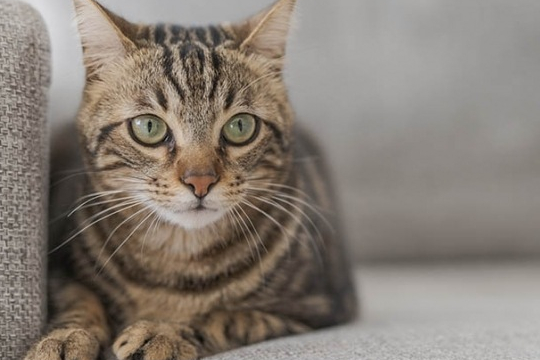
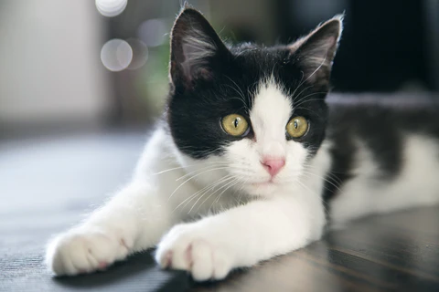
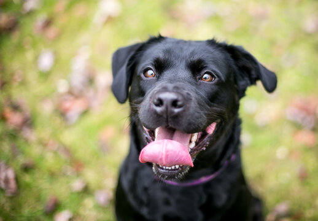
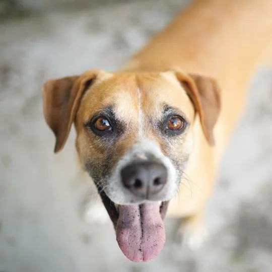

O maior ato de amor é dar um lar a quem
mais
precisa
O pet que você procura para alegrar sua família está aqui.
Adote um pet e mude uma vida!
Por que adotar?
Salva vidas
Ao adotar um animal de estimação, você está dando a ele uma segunda chance e salvando uma vida. Muitos animais estão à espera de um lar amoroso.
Combate o abandono
Escolher adotar um pet em um abrigo ao invés de comprá-lo, você ajuda a reduzir o número de animais abandonados e negligenciados.
Amor incondicional
Os animais de estimação oferecem amor incondicional. Eles se tornam parte da família e trazem alegria e companheirismo para o lar.
Pet's à espera de um lar amoroso
-

Blanche Pearson
Idade: 2 anosPorte: Médio -

Joenas Brauers
Idade: 2 anosPorte: Médio -

Lariach French
Idade: 2 anosPorte: Médio -

James Khosravi
Idade: 2 anosPorte: Médio -
Kristina Zasiadko
Idade: 2 anosPorte: Médio -

Donald Horton
Idade: 2 anosPorte: Médio
Por que ajudar?
Assim como adotar, ajudar através de doações é uma forma poderosa de fazer a diferença na vida dos animais necessitados.
Sua doação pode ser a diferença para um animal abandonado enfrentando fome e frio nas ruas.
Ao fazer uma doação em dinheiro ou doar itens essenciais, você ajuda as ONGs a fornecer cuidados básicos e emergenciais para os animais.
Cada centavo doado contribui, seja para pagar por tratamentos médicos, comprar comida ou fornecer abrigo temporário.
Ao doar, você se torna parte de uma comunidade dedicada a fazer do mundo um lugar melhor. Sua doação inspira outros a agirem em prol do bem-estar animal.
Pet's perdidos
Bela
Bairro Natureza
DesaparecidoSem nome
Bairro Natureza
Procura-se donoNiko
Bairro Natureza
Desaparecido
Bela
Bairro Natureza
DesaparecidoSem nome
Bairro Natureza
Procura-se donoNiko
Bairro Natureza
Desaparecido